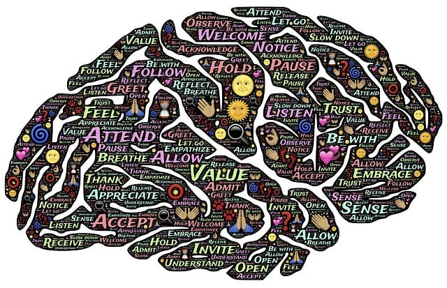
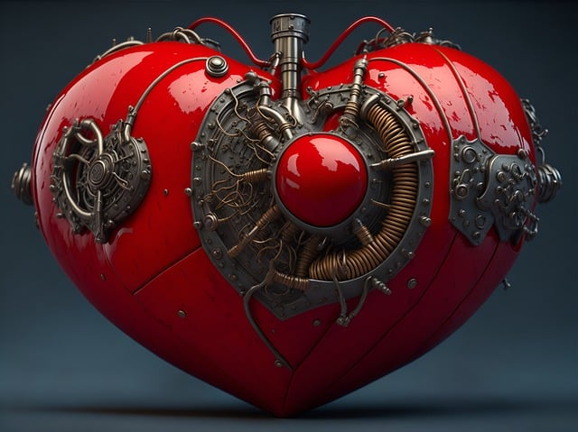
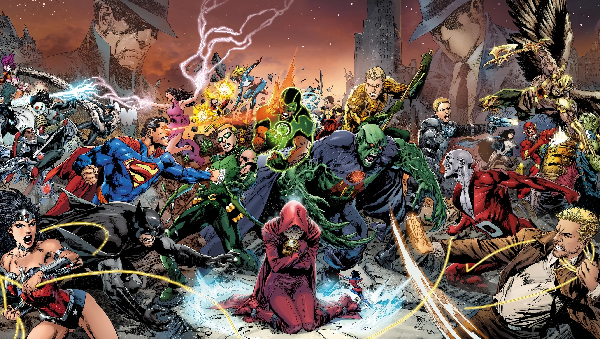

When a mysterious energy surge was detected in the heart of New York City, it became clear that this was no ordinary threat. It was a signal, calling forth an ancient enemy from the depths of space, one that sought to claim Earth as its own. The Avengers assembled, ready to defend the world from the impending doom.
Iron Man soared through the skies, his suit’s repulsors charged and ready. He scanned the area, identifying weak points in the enemy’s armor. Captain America, with his unbreakable shield, led the ground forces, inspiring those around him with his unwavering resolve.
Thor, the God of Thunder, brought the might of Asgard to bear, his hammer Mjolnir crackling with lightning as he struck down foe after foe. The Hulk, the embodiment of raw strength, unleashed his fury, becoming an unstoppable force against the invaders.
Black Widow and Hawkeye fought back-to-back, their precision and agility cutting through the enemy ranks. Scarlet Witch manipulated reality itself, her powers protecting civilians and turning the tide of battle. Vision, the android Avenger, phased through walls and machinery, sabotaging the enemy’s equipment from within.
As the battle raged on, Doctor Strange bent the fabric of reality, creating portals that outflanked the enemy, while Spider-Man swung between buildings, rescuing those trapped in the chaos. Black Panther, the king of Wakanda, brought his nation’s advanced technology and warriors to aid in the fight.
Together, the Avengers pushed back against the darkness. Iron Man’s intellect, Captain America’s leadership, Thor’s power, Hulk’s strength, Black Widow’s and Hawkeye’s skill, Scarlet Witch’s magic, Vision’s strategy, Doctor Strange’s sorcery, Spider-Man’s bravery, and Black Panther’s resources combined to form an unbreakable front.
In the end, it was their unity and their willingness to sacrifice everything for the greater good that saved the world. The energy surge was contained, the enemy vanquished, and peace restored. The Avengers stood tall amidst the ruins, not just as heroes, but as a symbol of hope for all of humanity.
I hope you enjoy this tale of heroism and unity as the Avengers once again save the world from a formidable foe.

In the heart of Metropolis, the sky turned a menacing shade of crimson as a portal to another dimension ripped open, unleashing a horde of monstrous creatures upon the city. The citizens fled in terror, but there was a beacon of hope amidst the chaos: the Justice League.
Superman was the first to respond, his cape billowing like a flag of defiance against the invaders. With strength that could move planets, he pushed back the creatures, his fists a blur of motion. Wonder Woman joined him, her lasso of truth ensnaring the beasts and her sword cutting through the darkness.
From the shadows, Batman orchestrated the counterattack, his strategic mind devising plans faster than the Batcomputer. His gadgets disabled the enemy’s weapons, giving the civilians time to evacuate. The Flash zipped through the streets, a red streak saving people from falling debris and ushering them to safety.
High above, Green Lantern’s ring conjured constructs of immense power, barriers to protect and weapons to strike. Aquaman rose from the depths of the ocean, summoning the might of the seas to wash away the invaders. Cyborg hacked into the city’s infrastructure, turning the technology against the enemy.
As the battle raged, Martian Manhunter reached out with his mind, connecting with the citizens, offering them calm amidst the storm. His telepathic abilities also disrupted the invaders’ communication, sowing confusion in their ranks.
Together, the Justice League fought with all their might. Superman and Wonder Woman led the charge, Batman outsmarted the enemy leaders, The Flash rescued the endangered, Green Lantern shielded the weak, Aquaman commanded the tides, Cyborg turned the city into a weapon, and Martian Manhunter broke the enemy’s will.
In the end, it was a combination of strength, wisdom, courage, and unity that closed the portal and banished the creatures back to their realm. The world was safe once more, thanks to the Justice League. The citizens of Metropolis would sleep well tonight, knowing that when danger arose, their heroes would always be there to save the day. And so, the Justice League stood together, not just as defenders of Earth, but as symbols of hope for all beings in the universe.